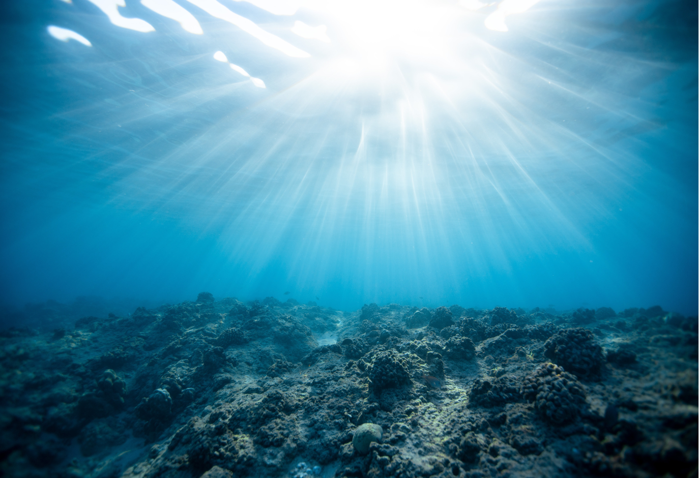

The UN Decade of Ocean Science for Sustainable Development (2021-2030, known as the Ocean Decade) is generating increasing enthusiasm and energy in the ocean science communities.
Marine robotics and autonomous systems community have a big part to play in taking technology forward in the coming Decade for improved sensing and Ocean exploration.
As part of the Decade, nine challenges have been outlined for humanity to tackle in the coming years. Marine robotics and autonomous sensing systems can contribute directly to challenges 1, 3, 4, 7 and 9, but indirectly has an impact on all nine challenges.
The panel discussion will focus around the Decade theme, namely, how to achieve the "Science we Need for the Ocean we Want", in the context of marine autonomy. It may span sub-topics such as:
- The importance of marine robotics and autonomous sensing systems during the Decade, with particular relevance to individual challenges.
- how autonomy can contribute towards sustainable use and exploration of the Ocean, and contribute to economic growth.
- How to get the private sector, academia, government, philanthropic organizations to work harmoniously towards accelerating solutions in marine robotics and autonomy and remove impediments to development.